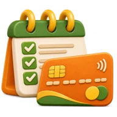
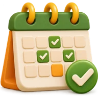

Para verdim · Para aldım
Tek dokunuşla kaydet. Uygulama bunun bir ödeme mi yoksa yeni bir borç mu olduğunu kişinin bakiyesine bakarak kendisi ayırır. Her kişi için alacak ve borç ayrı ayrı; geçmiş aylardan kalanlar ayrıca gösterilir, ödemeler en eski kalemden düşülür.

Kredi kartı taksitleri
Kartlarını kesim ve son ödeme günleriyle ekle; taksit tarihleri kendiliğinden hesaplanır. Başkasının kartıyla yaptığın alışverişi de ekleyebilirsin. Kısmi ödenenler, bekleyenler ve gecikenler bir bakışta görünür.

Aylık defter
Maaş, kira, fatura, kredi gibi her ay tekrarlanan gelir ve giderlerini bir kez gir. "Şu aydan itibaren yeni tutar" ile tutar planı yap, yalnız bu ayın tutarını değiştir, kısmi öde ya da ödendi işaretle. Ay sonunda ne kaldığını gör.
Altın, döviz ve varlıklar
Gram, çeyrek, yarım, tam, Cumhuriyet altını, bilezik; gümüş, döviz ve nakit. Güncel kurlarla net varlığını ve günlük değişimi gör, varlık geçmişini grafikte izle. Altın ya da dövizle verilen ve alınan borçları, emanetleri ayrı tut.
Zekât hesabı
Nisab, matrah ve yıl dolumu otomatik takip edilir; verdiğin zekâtları kaydedersin, kalan tutar düşer. Hesaplama seçeneklerini kendi görüşüne göre ayarlarsın. Değer hesaplayıcı ile "kaç çeyrek kaç lira eder" sorusunu hemen yanıtla.
Paylaşım ve ortak hesap
Bir kişinin hesabını onunla paylaş, ikiniz de aynı kayıtları görün. Ya da eşine, ailene seçtiğin bölümleri (borç defteri, varlıklar, aylık defter) salt okunur aç. Davet gelince ve kabul edilince bildirim alırsın; erişimi istediğin an kaldırırsın.
Hatırlatma ve takvim
Ödemeler takviminde bu ay ödenecek ve tahsil edilecekler gün gün durur. Yaklaşan vadeler için hatırlatma, ortak hesaplardaki değişiklikler için bildirim gelir.
Gizlilik ve güvenlik
Tek dokunuşla tüm tutarları gizle, Face ID / parmak izi kilidi aç. İnternetsiz de çalışır; bağlantı gelince kayıtlar gönderilir. Yedeğini dosya olarak al, hesabını ve tüm verini uygulama içinden sil.
Uygulama paramı yönetiyor mu, bankama bağlanıyor mu?
Hayır. Akıllı Hesap yalnız kayıt tutar ve hesaplar; para transferi yapmaz, bankaya ya da kartına bağlanmaz.
Hesap açmam gerekiyor mu?
Denemek için gerekmez: giriş ekranında "Örnek verilerle gir" seç. Kendi kayıtların için Apple veya Google ile giriş yaparsın; böylece verilerin telefonların arasında eşitlenir.
Verilerim kimde?
Kayıtların yalnız senin hesabına bağlıdır, başkası göremez (paylaştıkların hariç). Reklam ve takip yok, veriler üçüncü taraflarla paylaşılmaz. Ayrıntı: Gizlilik politikası.
Kurlar nereden geliyor?
Altın ve döviz kurları herkese açık bir kaynaktan okunur; gösterim amaçlıdır. İstersen elle de girebilirsin.
Hesabımı nasıl silerim?
Uygulamada Ayarlar → "Hesabımı sil". Ayrıntı: Hesap ve veri silme.